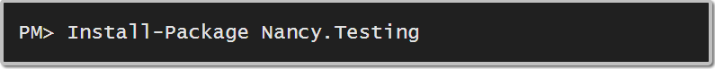

Why Nancy?

#!/usr/bin/env ruby
require 'sinatra'
get '/' do
redirect to('/hello/World')
end
get '/hello/:name' do
"Hello #{params[:name]}!"
endOne of the core concepts in Nancy is hosts
Hosts are adapters for hosting environments and Nancy
Runs on existing technologies
To change the runtime behavior of Nancy, write a custom bootstrapper
public class CustomBootstrapper : DefaultNancyBootstrapper
{
protected override void ApplicationStartup(
TinyIoCContainer container,
IPipelines pipelines)
{
// your customization goes here
}
}Get["/customers"] = p => View["customers.html"];\customers folderGet["/customers"] = p => View[customersModel];Model if there/customers folderpublic class CustomBootstrapper : DefaultNancyBootstrapper
{
protected override void ApplicationStartup(
TinyIoCContainer container,
Nancy.Bootstrapper.IPipelines pipelines)
{
Conventions
.ViewLocationConventions
.Add((viewName, model, context) =>
{
return string.Concat("custom/", viewName);
});
}
}IConventionViewLocationConventions propertyYou get a lot of choices...
@Master['MasterPage']
@Section['Content']
<p>This content from the index page<p>
<h3>Partials</h3>
<p>Partial view with no model.</p>
<div id="login">@Partial['login'];</div>
<p>Partial with a sub-model passed in.</p>
<p>Iterate with Each</p>
<div id="users">@Partial['user', Model.Users];</div>
<h3>Encoding</h3>
<p>Model output can also be encoded:</p>
<p>@!Model.NaughtyStuff</p>
@EndSectionPM> Install-Package Nancy.ViewEngines.Razor@Model not @model like in ASP.NET MVC
// captures routes like /hello/nancy sent as a GET request
Get["/hello/{name}"] = parameters => {
return "Hello " + parameters.name;
};
// captures routes like /favoriteNumber/1234,
// but not /favoriteNumber/asdf as a GET request
Get["/favoriteNumber/{value:int}"] = parameters => {
return "Favorite number is " + parameters.value + "?";
};// captures routes like /products/1034
// sent as a DELETE request
Delete[@"/products/(?<id>[\d]{1,7})"] = parameters => {
return 200;
};
// captures routes like /users/192/add/moderator
// sent as a POST request
Post["/users/{id}/add/{category}"] = parameters => {
return HttpStatusCode.OK;
};int , long , decimal , guid , bool , alpha , datetime , datetime(format) , min(minimum) , max(maximum) , range(minimum, maximum) , minlength(length) , maxlength(length) , length(minimum, maximum)
RouteSegmentConstraintBase<T>
ParameterizedRouteSegmentConstraintBase<T>var model = this.Bind<Foo>();Serialization
Deserialization

[Fact]
public void Should_return_status_ok_when_route_exists()
{
var bootstrapper = new DefaultNancyBootstrapper();
var browser = new Browser(bootstrapper);
var result = browser.Get("/", with => {
with.HttpRequest();
});
Assert.Equal(HttpStatusCode.OK, result.StatusCode);
}[Fact]
public void Should_redirect_to_login_error_details_incorrect()
{
var bootstrapper = new DefaultNancyBootstrapper();
var browser = new Browser(bootstrapper);
var response = browser.Post("/login/", (with) => {
with.HttpRequest();
with.FormValue("Username", "username");
with.FormValue("Password", "wrongpassword");
});
response.ShouldHaveRedirectedTo(
"/login?error=true&username=username");
}[Fact]
public void Should_display_error_message_when_error_passed()
{
var bootstrapper = new DefaultNancyBootstrapper();
var browser = new Browser(bootstrapper);
var response = browser.Get("/login", (with) => {
with.HttpRequest();
with.Query("error", "true");
});
response.Body["#errorBox"]
.ShouldExistOnce()
.And.ShouldBeOfClass("floatingError")
.And.ShouldContain(
"invalid",
StringComparison.InvariantCultureIgnoreCase);
}Get["/"] = parameters => {
return new MyModel();
};The content negotiation pipeline will inspect the incoming Accept headers and determine which of the requested media types is the most suitable and format the response accordingly.
Get["/ratpack"] = parameters => {
return new RatPack {FirstName = "Nancy "});
};TL;DR: stick stuff in /Content .. done.
public class CustomBoostrapper : DefaultNancyBootstrapper
{
protected override void
ConfigureConventions(NancyConventions conventions)
{
base.ConfigureConventions(conventions);
conventions.StaticContentsConventions.Add(
StaticContentConventionBuilder.AddDirectory
("assets", @"contentFolder/subFolder")
);
}
}Short Answer: No built-in authentication
Longer Answer: Extension points allow you to add authentication that fits your business needs.
Nancy.Authentication.Forms)Nancy.Authentication.Basic)Nancy.Authentication.Stateless)public class ShowStudyModule: NancyModule
{
public ShowStudyModule(ILicense license)
{
this.RequiresAuthentication();
this.RequiresClaims(new[] {"admin"});
this.RequiresLicense(license);
Get["/show/{studyid}"] = p => View["show", p.studyid];
...protected override
DiagnosticsConfiguration DiagnosticsConfiguration =>
new DiagnosticsConfiguration { Password = @"secret" };Because it Rocks!
Oh, and all that other stuff I said.